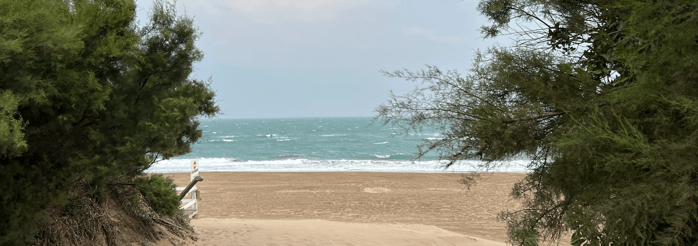

🎯 Mi objetivo es obtener un amplio conocimiento de las diferentes soluciones digitales que una empresa puede aprovechar para automatizar sus procesos.
🧐 Encuentro realmente interesante el análisis del comportamiento de los usuarios.
💻 Me gusta diseñar y desarrollar aplicaciones web.

Por otro lado, el artístico, me gusta capturar momentos únicos tanto en fotos como video por los distintos lugares que voy conociendo.
Los temas que mas me interesan son los bosques, ciudades y naturaleza.
Lo mas difícil es encontrar el momento justo, el lugar y posición adecuada o la combinación de todo lo anterior que resulte en una única situación irrepetible...